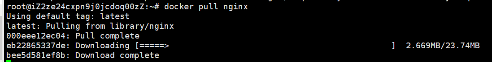

docker实现原理
目录
docker是什么，有什么用
docker的架构
（1）镜像
（2）镜像仓库
（3）容器
总结
docker是什么，有什么用
打个比方：
云计算：是一艘大货轮，它有足够的空间（硬件资源）
docker：是货轮的集装箱，装载着一个个的货物（应用）
开发者在云端部署自己应用的时候，一个必须要考虑的问题就是，我如何在云端部署自己应用需要的环境。但是这是一个非常麻烦的问题，所以docker出现了。Docker 是一个便携的应用容器，它能让你在部署自己服务的时候更加方便。
docker的架构
Docker 包括三个基本概念:
- 镜像（Image）：Docker 镜像（Image），就相当于是一个 root 文件系统。比如官方镜像 ubuntu:16.04 就包含了完整的一套 Ubuntu16.04 最小系统的 root 文件系统。可以理解为一个镜像是一个带环境的二进制文件。
- 容器（Container）：镜像（Image）和容器（Container）的关系，就像是面向对象程序设计中的类和实例一样，镜像是静态的定义，容器是镜像运行时的实体。容器可以被创建、启动、停止、删除、暂停等。
- 仓库（Repository）：仓库可看着一个代码控制中心，用来保存镜像。
镜像
镜像的实质其实就是rootfs。具体rootfs的相关知识可参考
https://www.cnblogs.com/kelamoyujuzhen/p/11541495.html
rootfs 打包的不只是应用，而是整个操作系统的文件和目录，也就意味着，应用以及它运行所需要的所有依赖，都被封装在了一起。这个其实就解决云端和本地环境一致性的问题。因为它把依赖都封装了。但是rootfs是静态的，并不包括操作系统内核。
镜像最精彩的地方在于，它制作rootfs的时候，采用了一个联合文件系统（UFS）的东西。UFS最主要的功能是将多个不同位置的目录联合挂载到同一个目录。最终rootfs的结构出来了，它是一层一层组合的，每一层都是一个rootfs增量。这样的好处就是，大家在定制自己的镜像之前，可以在之前镜像的基础上进行操作。而且每层的rootfs增量是可以共享的，也节省了空间。
关于镜像目录的存储，可以参考这篇文章：
https://www.jianshu.com/p/8cd83436373b
镜像仓库
镜像仓库可以存储镜像的地方，镜像统一在一个地方更加方便的使用，和二次利用。当然还可以搭建私有仓库。

上图是我拉取nginx镜像的过程。从过程中可以看出来，镜像也是以一层一层的形式组织的。
bee5d581ef8b这是某个层的id，如果这个层已经存在，那么pull的时候不会重新下载。
容器（container）
容器的本质
容器其实就是一个进程。容器技术的核心功能，就是通过约束和修改进程的动态表现，从而为其创造出一个“边界”。从而使得一个容器看起来就是一个完整的mini 服务器。它有自己的操作系统，有自己的文件系统等等。
所以容器技术的关键就是如何创造一个“边界”。那么如何实现呢？其实还是linux的老一套，限制+隔离。具体就是Namespace + Cgroup。
Namespace
Linux 支持7种namespace:
cgroup用于隔离cgroup根目录;
IPC用于隔离系统消息队列;
Network隔离网络;
Mount隔离挂载点;
PID隔离进程;
User隔离用户和用户组;
UTS隔离主机名nis域名。
举例如何隔离pid
当我们用docker exec命令进入容器内存的时候，我们用ps命令会发现：
|
|
容器里只有这两个进程。这其实就是已经隔离了pid。某个容器只能看到自己相关的进程。并且/bin/sh的pid还是1。这样就给了这个容器，它本身就是“老大”的错觉。
这里起到关键作用的就是clone。在 Linux 系统中创建线程的系统调用是 clone()。
clone(main_function, stack_size, CLONE_NEWPID | SIGCHLD, NULL); clone函数的使用如上，其中有一个参数为CLONE_NEWPID，它的作用就是新创建的这个进程将会“看到”一个全新的进程空间，在这个进程空间里，它的 PID 是 1。这个pid是针对新的命名空间而言的，就是容器里面的pid是1。但其实它本身在外面的pid不是，可能是100。
这样就实现了pid的隔离。其他的Namespace的隔离，大体的原理都是一样，通过使用一些障眼法，让容器的进程，只能看到自己相关的东西。
Cgroup
Cgroup是对进程的限制。有了隔离还是不够，还需要对进程进行限制，如果不限制的话，那一个容器如果占满了CPU，其他容器就只能等待。
在 Linux 中，Cgroups 给用户暴露出来的操作接口是文件系统，具体来说是VFS。用户通过VFS和Cgroups进行操作。例如，使用 mount -t cgroup 命令，我们可以得到下面的结果。
cpuset on /sys/fs/cgroup/cpuset type cgroup (rw,nosuid,nodev,noexec,relatime,cpuset)
cpu on /sys/fs/cgroup/cpu type cgroup (rw,nosuid,nodev,noexec,relatime,cpu)
cpuacct on /sys/fs/cgroup/cpuacct type cgroup (rw,nosuid,nodev,noexec,relatime,cpuacct)
blkio on /sys/fs/cgroup/blkio type cgroup (rw,nosuid,nodev,noexec,relatime,blkio)
memory on /sys/fs/cgroup/memory type cgroup (rw,nosuid,nodev,noexec,relatime,memory)其中/sys/fs/cgroup/cpuset就是现在限制cpu使用暴露出来的接口。我们在该目录下，可以看到下面的文件。
|
|
比如，我们修改cpu.cfs_period_us和cpu.cfs_quota_us里面的数组，我们就可以限制CPU的使用份额了。
例如：period文件内容为10000ms,某个容器的limit文件内容为-1（表示没限制）。如果limit文件内容为200,那么该容器CPU使用为 2%。（200/10000）
对于 Docker 等 Linux 容器项目来说，它们只需要在每个子系统下面，为每个容器创建一个控制组（即创建一个新目录），然后在启动容器进程之后，把这个进程的 PID 填写到对应控制组的 tasks 文件中就可以了。
chroot
Namespace + Cgroup已经实现了进程的隔离和限制。但是对于进程来说，他的文件系统还是不全的。所以这个时候chroot出现了。 在 linux 系统中，系统默认的目录结构都是以/，即是以根 (root) 开始的。而在使用 chroot 之后，系统的目录结构将以指定的位置作为/位置。 所以我们容器之后，会发现容器里面的目录结构和主机的一模一样，它里面也有etc, tmp，usr等目录。这个其实就是chroot做的。
总结
docker用的技术基本都是linux原来的那一套，以我目前的能力，只能看到这一层，再深一点就有点困难了，例如通过VFS可以修改cpu的限制，但是进程在调度的时候，具体的细节是怎么体现的呢，是否是来了一个进程，我都要查看一下他对应的cgroup文件，然后再进行限制？
类似这种问题，我先自己存个疑。等自己以后对linux有了更多的了解，再细看docker的这一套。